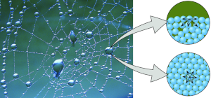

Bioquímica
Bioquimica: Água e sais minerais
A ligação de hidrôgenio entre as mólecas de água são responsaveis pela:
Coesão: União das móleculas de água

Adesão: União das móleculas de água com outras substâncias

Capilaridade: Capilaridade é o fenômeno de atração e repulsão onde se observa o contato dos líquidos com um sólido fazendo com que esse líquido suba ou desça, conforme molhe ou não a parede